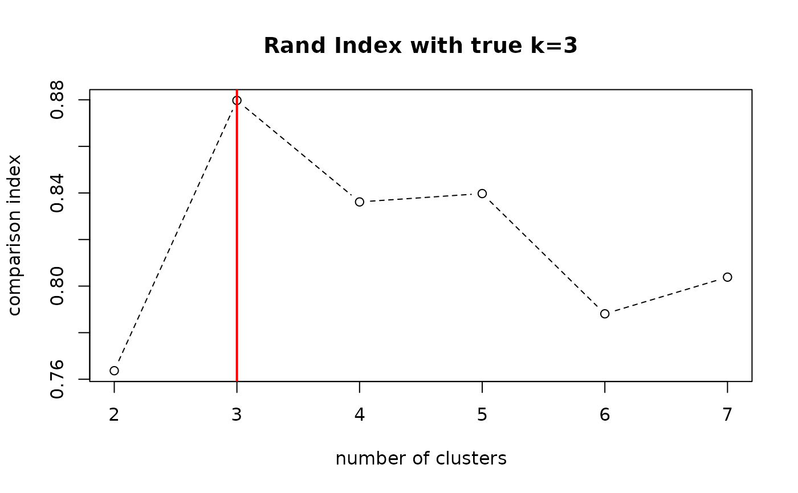

Compute Rand index between two clusterings. It has a value between 0 and 1 where 0 indicates two clusterings do not agree and 1 exactly the same.
compare.rand(x, y)
| x | 1st cluster label vector of length-\(n\). |
|---|---|
| y | 2nd cluster label vector of length-\(n\). |
Rand Index value.
Rand WM (1971). “Objective Criteria for the Evaluation of Clustering Methods.” Journal of the American Statistical Association, 66(336), 846. ISSN 01621459, doi: 10.2307/2284239 , https://doi.org/10.2307/2284239.
# \donttest{ # ------------------------------------------------------------- # true label vs. clustering with 'iris' dataset # ------------------------------------------------------------- ## PREPARE data(iris) X = as.matrix(iris[,1:4]) lab = as.integer(as.factor(iris[,5])) ## CLUSTERING WITH DIFFERENT K VALUES vec_k = 2:7 vec_cl = list() for (i in 1:length(vec_k)){ vec_cl[[i]] = T4cluster::kmeans(X, k=round(vec_k[i]))$cluster } ## COMPUTE COMPARISON INDICES vec_comp = rep(0, length(vec_k)) for (i in 1:length(vec_k)){ vec_comp[i] = compare.rand(vec_cl[[i]], lab) } ## VISUALIZE opar <- par(no.readonly=TRUE) plot(vec_k, vec_comp, type="b", lty=2, xlab="number of clusters", ylab="comparison index", main="Rand Index with true k=3")